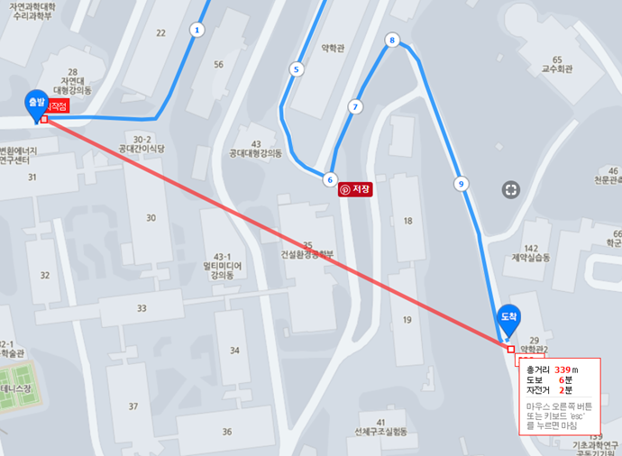
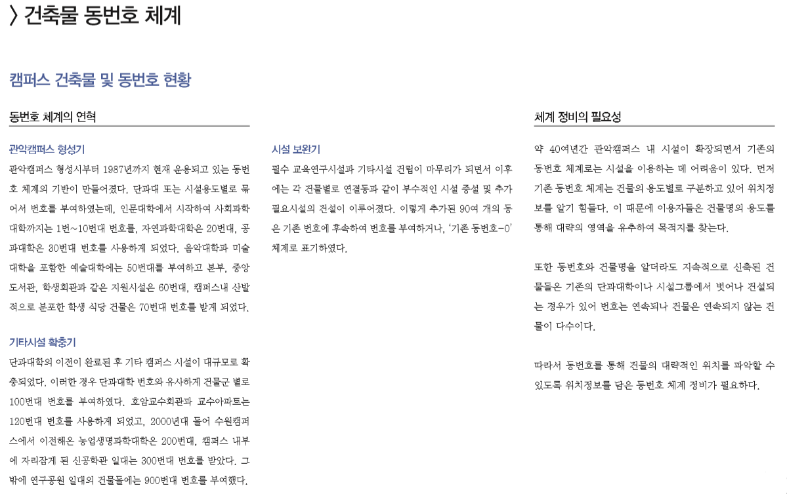
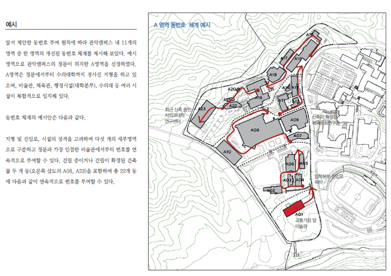

서울대학교에 다니는 A학생은 교양 수업이 시작되기 전 SMS로 다음과 같은 메세지를 받는다.
“오늘 수업은 29동 XXX호에서 진행됩니다.” 라는 내용으로 강의실이 변경되었다는 것이다. 공지를 받은 것은 한 시간 전, 학생회관에서 밥을 먹고 있던 A는 29동이면 학생회관 근처의 자연대 건물들이 20번대의 번호를 갖고 있기 때문에, 금방 찾을 수 있을 거란 생각으로 동기들과 수다를 떠는 등 여유를 부리다 강의가 시작되기 15분 전에 비로소 강의실로 출발한다. 5분이면 도착할 수 있을 줄 알았던 강의동이 10분이 지나도 나타나지 않자 A는 다급하게 주변 사람들을 붙잡고 물어보지만 이 근처에 있을 것이라는 말만 들으며 자연대 건물들을 배회하기 시작하고, 결국은 조교님께 전화를 건다
“29동 건물은 약대입니다”

그림에서 볼 수 있다시피 20번대 건물들이 모여 있는 구간과 29동 건물은 직선거리로 약 340m 도보거리로는 약 500m에 위치한다는 것을 알 수 있다. 서울대학교에 다니는 학생이라 하더라도 해당하는 단과대의 소속이 아니라면 29동의 위치를 파악하기는 쉽지 않다는 뜻이다. 실제로 서울대학교 건물들의 번호부여 체계는 규칙성을 찾아보기가 힘들어 많은 학생들의 불편을 초래하곤 한다. 이에 서울대학교 건물의 번호 부여체계는 일관성이 없다는 주장이 나타나곤 하는데, 과연 사실인지에 대해 팩트체크하고자 한다.
우선 29동의 문제를 해결할 수 있으면 사건의 실마리를 해결할 수 있을 것 같아 약학대학 과사무실에 전화를 걸었다. 과사무실 조교를 비롯한 여러 직원들과 대화를 했지만 약학대학건물이 왜 29번 건물을 가지고 있는 지에 대해서는 알고 있는 사람이 없었다.
이에 굴하지 않고 서울대학교 포털사이트, 나무위키로 관련된 정보를 찾으려 여기 저기 수소문을 해봤지만 ‘썰’ 이상의 유의미한 정보를 커뮤니티 사이트에서 찾아내는 것도 한계가 있었다.
마지막으로는 서울대학교 본부에 직접 물어보는 방법을 택했다. 시설관리국의 캠퍼스관리과의 직원과 연락이 닿아 몇 가지 사실을 알 수 있었다.

위의 내용은 서울대학교 캠퍼스 마스터 플랜 2012-2016에 수록되어 있는 내용으로 초기엔 일정한 규칙을 가지고 시행했다는 점을 알 수 있었다. 이에 따르면 법대 및 사회대 근처에 왜 60번대 건물인 두레문예관이 있는지, 경영대 건물들 근처에 100번대 건물인 동원관이 있는지에 대해 조금은 알 수도 있다. 하지만 시간이 지나면서 초기에 설정한 일종의 가이드라인에 가까운 규칙들은 시간이 지나면서 임의로 변형 및 확장되었고 결국은 오늘날과 같은 다소 불편한 건물 부여체계에 이르게 된 것이다.
팩트체크 : 서울대 건물의 번호 부여체계는 초기에 일정한 가이드라인 형태로 존재했으나 시간이 지나면서 그 체계를 점점 잃어가고 있는 상태로 ‘사실반 거짓반’에 해당된다.
그렇다면 앞으로 서울대는 이를 개선할 것인가? 위의 2012-2016 마스터플랜을 살펴보면 다음과 같은 방안을 제시하고 있다.

우선 알파벳으로 구획을 설정하고, 해당 구획의 지형, 동선, 건물 간의 관계 등을 고려하여 각 건물에게 번호를 부여 한다는 것이다. 최종적으로 ‘알파벳 + 숫자’의 형태로 건물에 번호를 부여하는 것인데 이는 국내를 비롯한 해외의 많은 대학에서 많이 찾아볼 수 있는 건물 번호 부여체계이다.
하지만 중요한 점은 해당 마스터 플랜은 2016년까지의 계획서로 2018년이 다가오는 지금까지 실질적인 움직임은 존재하지 않았다는 사실이다. 본부는 이를 개선해 나갈 의지가 별로 없는 걸까? 이에 캠퍼스 기획과로 문의를 했지만 17년 이후의 마스터 플랜에도 전과 비교했을 때 달라진 부분은 없을 것 같다는 대답만을 들을 수 있었다.